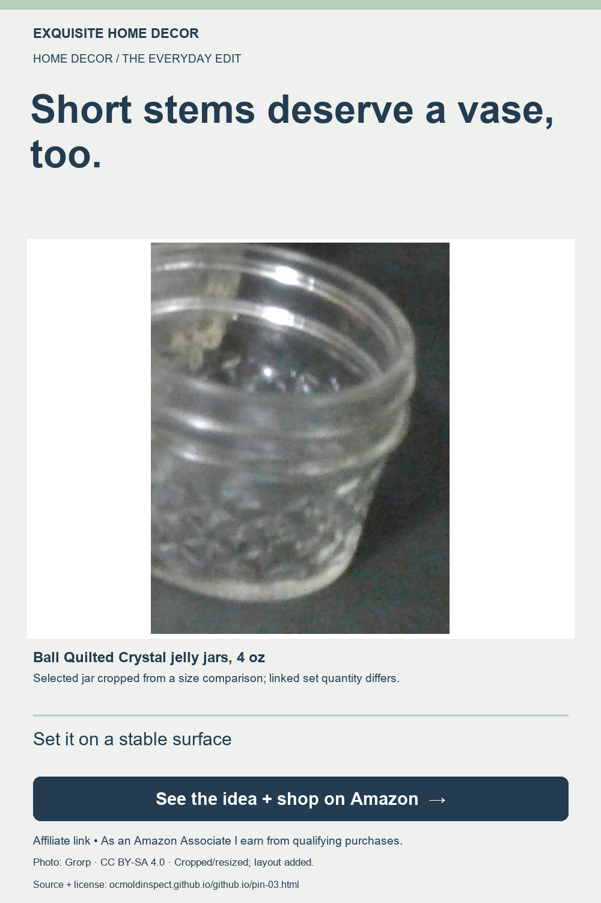

Home decor
A tiny jar idea for short flower stems
As an Amazon Associate I earn from qualifying purchases. This page contains an affiliate link.

Ball Quilted Crystal jelly jars, 4 oz
Consider a Ball 4 oz Quilted Crystal jar for a tiny flower arrangement. Measure your space and plan short stems before buying. Linked set: six jars; flowers are not included.
- Use only a few stems
- Check the small jar size
- Set it on a stable surface
Exact linked listing: Ball Quilted Crystal jelly jars, 4 oz, pack of 6.
Confirm current dimensions, materials, contents and care instructions on Amazon. This is a researched idea, not a hands-on product review. No price or availability is promised.
View exact product on Amazon ↗
Selected jar cropped from a size comparison; linked set quantity differs. Other objects visible in a photograph are not included unless the listing says so. No brand or photographer endorsement is implied.
Photo credit and reuse license
File:Mason jar array.jpg by Grorp, licensed CC BY-SA 4.0. Changes: Cropped to the selected jar and resized; editorial text and layout added.. Original photograph.

This finished Pin image and our layout contributions are offered under CC BY-SA 4.0; retain the original photo attribution and license. Product trademarks remain with their owners.